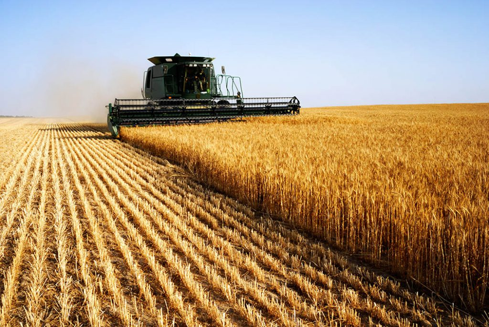
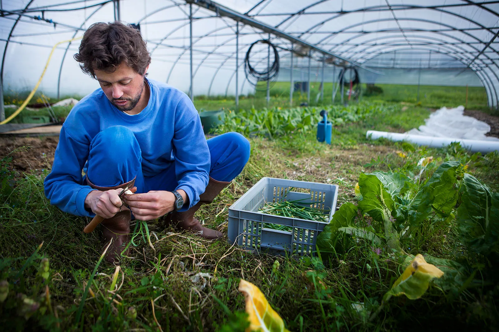
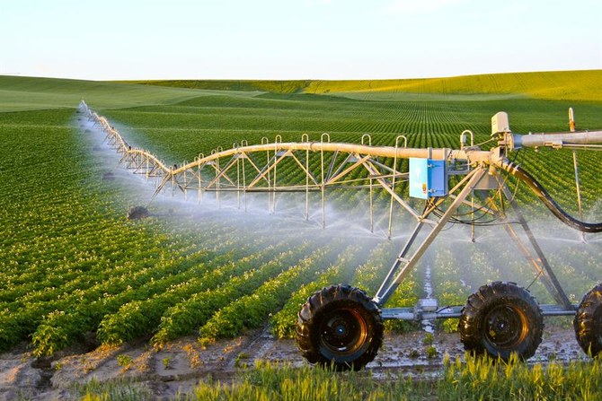
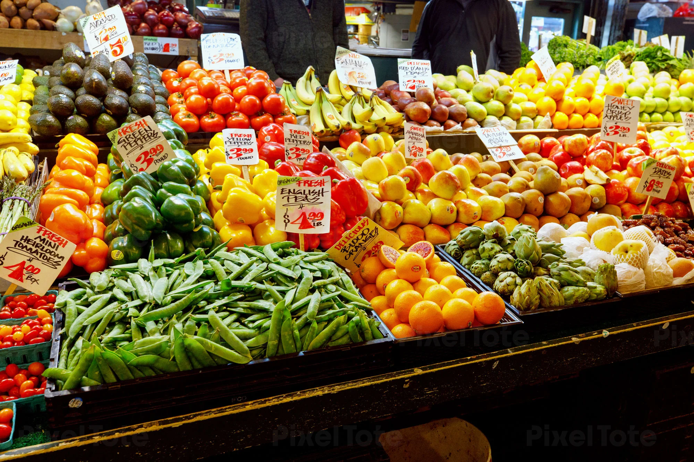

Organic Wheat for Sale
High-quality organic wheat, directly sourced from local farmers. Perfect for your business or retail needs. Bulk orders available.
Price: $1.50 per lb
Collaboration: Sustainable Farming Practices
We are looking for partners to help implement sustainable farming practices. Collaborate with local farmers to promote organic and eco-friendly farming.
Support for Small-Scale Farmers
We provide funding and resources to small-scale farmers to help them expand and improve their production. Join us in supporting the future of farming!
Sourcing Fresh Produce
We are sourcing fresh produce directly from farmers. Looking for suppliers of high-quality fruits, vegetables, and herbs. Join us to bring farm-fresh products to market.